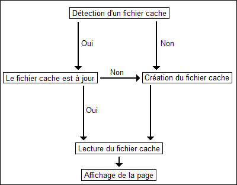

Lors du codage d'un site, on est toujours amené à se poser des questions sur les ressources consommées par ce dernier. En effet, les requêtes MySQL représentent une bonne part de l'utilisation du serveur : d'ailleurs, chez la majorité des hébergeurs, les bases de données se trouvent sur un serveur à part.
Si l'optimisation des requêtes est important, ainsi que leur nombre, il arrive un moment où l'on ne peut plus rien faire de ce côté sous peine d'enlever des fonctionnalités à son site.
Un système de cache permet de réduire le nombre de requêtes ainsi que le traitement qui en découle : il est possible d'organiser son code de telle façon que seules les requêtes indispensables soient effectuées, les autres l'ayant déjà été, et mises en cache précédemment.
Je suis sûr que vous vous demandez si votre site a besoin d'un système de cache. Je ne peux pas vous donner la réponse mais vous aider à la trouver. Dans la majorité des cas, votre code PHP vous sort du code XHTML après de nombreux processus qui peuvent être longs à exécuter (requêtes, parsage, boucles, etc.).
Le principe d'un système de cache est de récupérer ce code XHTML et de le mettre de côté dans un fichier (en cache) pour que lors de la prochaine exécution de la page, on affiche directement le code XHTML sans refaire toutes les opérations PHP. Sur un petit site, le gain de temps et de ressources n'est pas très grand mais sur un site dont des pages sont vues des milliers (voire des millions) de fois par jour, ça représente au final une sacrée économie de ressources système.
Le Site du Zéro : grand utilisateur du cache
Eh oui, un grand site comme celui sur lequel vous vous trouvez en ce moment utilise un système de cache afin de soulager les serveurs en diminuant le nombre de requêtes. De nombreuses choses sont mises en cache, comme par exemple le message aléatoire du Livre d'or dans le menu. Si vous rechargez votre page toutes les secondes, vous verrez qu'il ne change pas à chaque fois, c'est parce qu'il a été mis en cache : il ne change qu'au bout d'une minute, et pendant cette minute, tous les visiteurs verront le même message. Au final, cela ne permet d'économiser qu'une requête, mais avec une fréquence de 185 pages vues par minute, c'est déjà énorme au vu du nombre de pages générées chaque mois (185.60.24.30 = 7992000 requêtes économisées par mois :waw: ).
Dans le même style, le nombre de visiteurs est aussi mis en cache pendant 1 minute (encore de sacrées économies). Dans un autre domaine, plus personnel, le nombre de MP non lus est aussi mis en cache, ce qui permet au site de vous afficher le nombre de MP non lus sans faire une requête à chaque fois. Le cache n'est reconstruit que lorsqu'il y a un changement dans ce nombre.
Organisation du système
Maintenant que vous êtes convaincus qu'un système de cache peut être bénéfique pour votre site, vous vous demandez comment cela fonctionne. Comme je suis très gentil, je vais vous faire un beau dessin. :D

Maintenant que vous avez regardé mon beau dessin, je vais vous en expliquer le principe. Il faut tout d'abord voir si l'on a un fichier en cache pour la page correspondante : si ce n'est pas le cas, on crée ce fichier cache, puis on le lit dans la foulée.
Par contre, si on trouve un fichier cache, on vérifiera qu'il soit bien à jour (je vous montrerai comment faire ça dans la suite du tuto). S'il est à jour, on lit ce fichier ; si ce n'est pas le cas, on en crée un nouveau qui écrasera le précédent.
Vous l'avez compris : le cache PHP, c'est juste remplacer un système par une simple lecture de fichier, ce qui est infiniment plus rapide et plus économique. Et si maintenant on voyait comment ça marche en PHP (ce qui est un peu le but du tuto) ?
Lorsque vous demandez à un script PHP de s'exécuter, il vous renvoie 2 types d'informations :
les informations invisibles par le visiteur : les en-têtes (avec header(), les cookies, les sessions, etc.)
les informations visibles par le visiteur : le code XHTML (bref, votre page web).
Et c'est sur ce fameux code XHTML, ou plutôt sur son affichage, que l'on va travailler.
La tamporisation de sortie
Il existe déjà un tuto sur ce sujet, mais je vais vous montrer comment on peut s'en servir. Le code XHTML que le serveur retourne au client est créé grâce à la fonction echo, mais on peut faire en sorte d'empêcher les echo de nous retourner directement le code ; on va pour cela utiliser la fonction ob_start().
<?php
echo'Une phrase de la mort qui tue';
?>
<?php
ob_start(); // ouverture de la mise en tampon
echo'Une phrase de la mort qui tue';
ob_end_clean(); // fermeture de la tamporisation de sortie et effacement du tampon
?>
Si vous essayez ces deux codes, vous verrez que le premier vous génère bien du code XHTML, mais pour le second, vous vous retrouvez avec une page blanche. L'ob_start() a mis en tampon votre texte, on peut dire qu'il le garde sous le coude jusqu'à ce que vous lui demandiez de vous le ressortir. Ça tombe bien : je vais vous montrer comment faire.
<?php
ob_start();
echo'Une phrase de la mort qui tue';
ob_end_flush(); // affichage du tampon
?>
Et là miracle :waw: , il vous affiche le texte. La fonction ob_end_flush() sert à afficher les données stockées dans le tampon et à éteindre la tamporisation de sortie (que l'on avait ouverte avec ob_start()) ; l'ennui, c'est que cette fonction détruit aussi le tampon, on ne pourra donc pas le récupérer par la suite.
C'est bien sympa ton truc, mais comment on s'en sert pour créer un cache ?
La récupération du tampon
Tant que le tampon n'est pas détruit ou fermé, on peut le récupérer grâce à la fonction ob_get_contents().
<?php
ob_start(); // ouverture du tampon
echo'Une phrase de la mort qui tue';
$tampon = ob_get_contents(); // stockage du tampon dans une chaîne de caractères
ob_end_clean(); // fermeture de la tamporisation de sortie et effacement du tampon
echo $tampon ;
?>
Cela vous affiche la même page que le code précédent à une différence près : le tampon est stocké dans une variable sous forme d'une chaîne de caractères ; de plus, le tampon n'est pas détruit.
Donc, si au lieu de faire un echo, on récupérait cette chaîne de caractères et on la stockait dans un fichier, on pourrait par la suite lire ce fichier ?
Je suis content de voir que vous avez compris :D ; effectivement, on peut écrire cette chaîne dans un fichier grâce à la fonction file_put_contents. Cette fonction a besoin de 2 arguments.
Premier argument : le nom du fichier où l'on doit écrire les données (par exemple index.html).
Deuxième argument : ce que l'on veut écrire dans le fichier ; ici, ce sera la variable $tampon qui contient notre chaîne de caractères.
<?php
ob_start();
echo'Une phrase de la mort qui tue';
$tampon = ob_get_contents();
file_put_contents('cache/index.html', $tampon) ; //pour une meilleure organisation, on créera un répertoire cache pour y stocker les fichiers du cache
ob_end_clean(); // toujours fermer et vider le tampon
?>
Et donc maintenant, si on lit le fichier index.html, cela nous affichera notre texte ;) .
<?php
readfile('cache/index.html');
?>
Vous savez maintenant stocker dans un fichier du texte généré par un code PHP, c'est le principe même du cache PHP. On va maintenant voir comment s'en servir de manière pratique.
Pour que tout le monde parte sur un pied d'égalité, voici un petit script de news imaginaire, mais vous pouvez dès à présent appliquer le système de cache à votre propre système.
<?php
$retour = mysql_query('SELECT id, titre, date, contenu FROM news ORDER BY id DESC LIMIT 0, 10') or die (mysql_error());
while ($donnees = mysql_fetch_array($retour))
{
echo'<div class="news">
<h3>'.$donnees['titre'].'</h3>
le '.date('d/m/Y à H\hi', $donnees['date']).'<br />';
echo zcode($donnees['contenu']).'</div>';
}
?>
Vous voudriez une piqûre de rappel un rappel sur ce que vous avez à faire ? Eh bien vous devez d'abord déterminer si votre page est déjà en cache, ensuite vérifier si elle est à jour ; si l'une des deux conditions n'est pas bonne, vous devez générer le fichier cache puis le lire ; sinon, il suffit juste de lire le fichier cache.
Vous comprenez que lire un simple fichier texte est beaucoup plus rapide que passer par des requêtes, des boucles, du parsage de texte et j'en passe : c'est là qu'on fait des économies de temps et de ressources.
Et comment je fais pour savoir si mon fichier cache est à jour, est-ce qu'il existe une fonction qui pourrait me donner la date de sa dernière modification ?
Pour connaître la date de modification d'un fichier, il faut utiliser la fonction filemtime() ; elle prend comme argument le nom du fichier dont on veut la date de modification, elle nous renvoie une date sous la forme d'un TIMESTAMP.
Bon : si tout le monde est prêt, je lance le chrono et ramasse les copies dans 10 minutes :p .
Ramassage des copies
<?php
/*debut du cache*/
$cache = 'cache/index.html';
$expire = time() -3600 ; // valable une heure
if(file_exists($cache) && filemtime($cache) > $expire)
{
readfile($cache);
}
else
{
ob_start(); // ouverture du tampon
$retour = mysql_query('SELECT id, titre, date, contenu FROM news ORDER BY id DESC LIMIT 0, 10') or die (mysql_error());
while ($donnees = mysql_fetch_array($retour))
{
echo'<div class="news">
<h3>'.$donnees['titre'].'</h3>
le '.date('d/m/Y à H\hi', $donnees['date']).'<br />';
echo zcode($donnees['contenu']).'</div>';
}
$page = ob_get_contents(); // copie du contenu du tampon dans une chaîne
ob_end_clean(); // effacement du contenu du tampon et arrêt de son fonctionnement
file_put_contents($cache, $page) ; // on écrit la chaîne précédemment récupérée ($page) dans un fichier ($cache)
echo $page ; // on affiche notre page :D
}
?>
Explications
Je vois à vos mines sceptiques qu'il faut que je vous explique comment ce système marche.
<?php
/*debut du cache*/
$cache = 'cache/index.html';
$expire = time() -3600 ; // valable une heure
if(file_exists($cache) && filemtime($cache) > $expire)
{
readfile($cache);
}
else
{
//script de la mise en cache
}
Ligne 3 : je commence par donner un nom au fichier cache que je vais utiliser pendant tout le script afin de bien m'organiser.
Ligne 4 : je détermine ensuite la durée de validité du cache (je prends 1 h, mais vous pouvez prendre 24h si vous en avez envie).
Ligne 6 : je vérifie s'il y a déjà un fichier cache/index.html qui existe, et si celui-ci est bien à jour. La fonction filemtime() retourne la date de modification ou de création du fichier, on la compare à la date d'expiration pour voir si notre cache est périmé.
Le reste, normalement vous devez le comprendre, c'est le script pour créer le fichier cache.
Tout système peut être amélioré : par exemple pour celui-ci, vous pouvez lui ajouter un système de pagination, et chaque page de news sera mise en cache. Pour un système de ce genre, le cache est encore plus utile puisqu'il nous permet d'économiser, en plus de la requête pour récupérer les informations sur les news, la requête qui comptait le nombre total de news.
<?php
if(isset($_GET['page'])) $page = intval($_GET['page']);
else $page = 1 ;
/*debut du cache*/
$cache = 'cache/index-'.$page.'.html'; // un fichier cache pour chaque page de news
$expire = time() -3600 ; // valable une heure
if(file_exists($cache) && filemtime($cache) > $expire)
{
readfile($cache);
}
else
{
//script de la mise en cache pour la page correspondante
}
La lecture des fichiers mis en cache
Eh oui : vos fichiers peuvent être lus par tout le monde si la personne tape un lien pointant vers le fichier cache ; par exemple, http://www.latortuefacile.fr/cache/index1.html, pour pouvez lire le fichier cache de ma première page de news sur mon site.
Et en quoi c'est dangereux ?
Justement, si je vous donne le lien, c'est que vous ne pouvez rien faire contre moi ; ce qui est dangereux, c'est de mettre en cache une page qui normalement n'est visible que par un nombre restreint de personnes.
Par exemple au début, je mettais en cache les messages dans mon Livre d'or ; or, si c'était moi qui reconstruisait le cache, le fichier cache était construit avec ce que je voyais (c'est-à-dire l'IP de celui qui a posté ainsi que les boutons Supprimer et Éditer) : il faut avouer que cela fait tache. Donc, lorsque vous voulez mettre un système de cache sur une page, faites attention à ne pas créer un système qui mettrait en cache des données sensibles.
Un système de cache, outre le fait de vous faire économiser des ressources, vous donne la possibilité de placer sur votre site un module que vous hésitiez à installer jusqu'à maintenant en raison des ressources qu'il consommait.
Pour ce qui est des économies de ressources, vous pouvez arriver à afficher des pages dynamiques sans requête (et afficher un 0 requête en bas de page, c'est la classe :soleil: ).
Je remercie karamilo de m'avoir fourni le code source du site des informations concernant l'utilisation du cache sur le Site du Zér0.